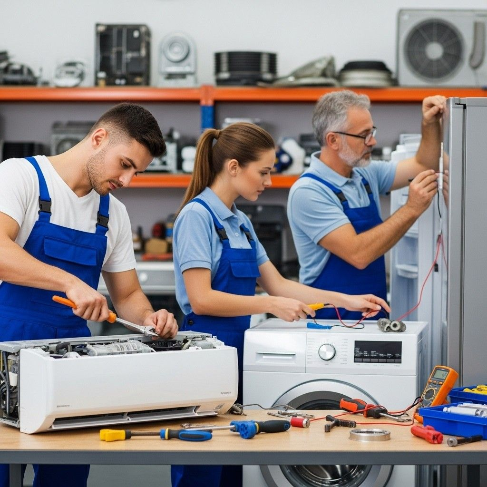
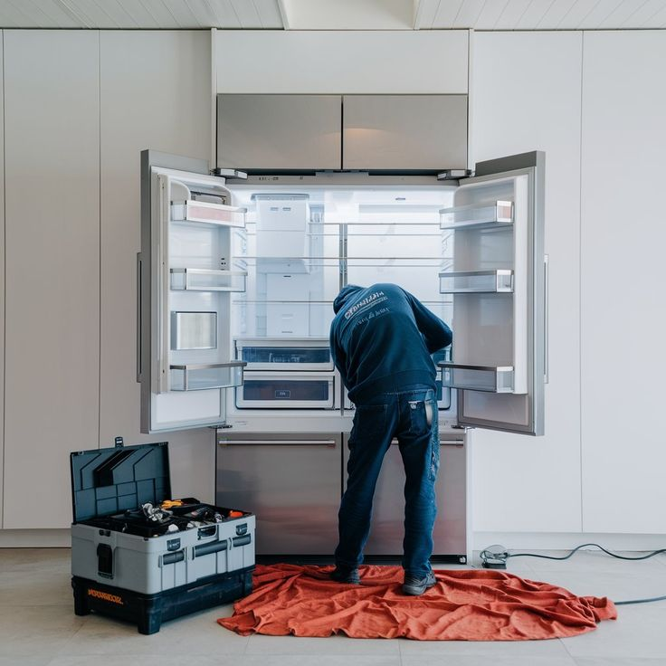
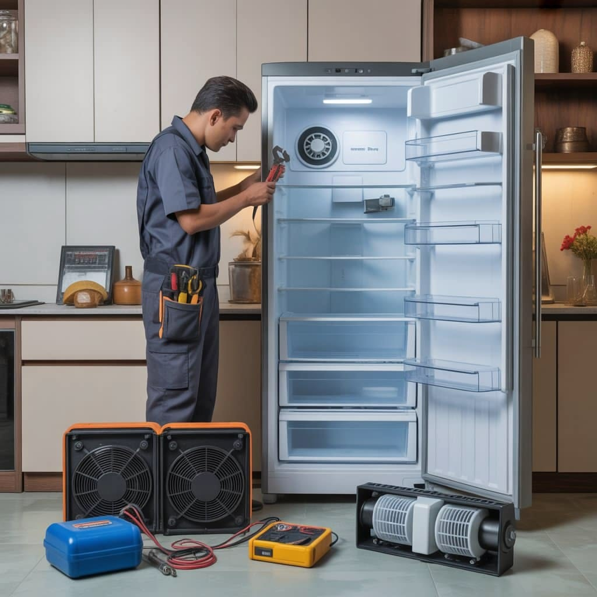
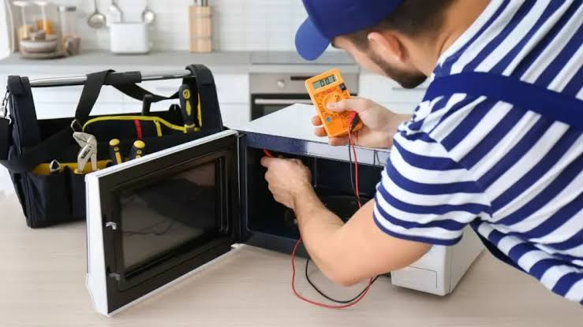
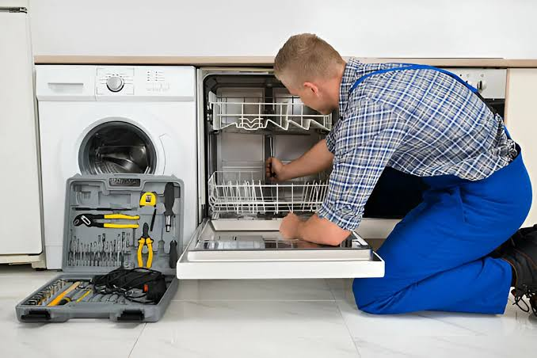

غسالاتأسباب توقف حلة الغسالة عن الدوران وكيفية إصلاحها فوراً
تعرف على الأعطال الشائعة في محرك وسور الغسالة الأوتوماتيك وطرق تفاديها لحماية جهازك من التلف...
اقرأ المزيد ←أحدث مقالات الخبراء، النصائح الاحترافية، وأبرز طرق الصيانة الفورية لحماية أجهزتك المنزلية وزيادة عمرها الافتراضي بكفاءة عالية.

غسالاتتعرف على الأعطال الشائعة في محرك وسور الغسالة الأوتوماتيك وطرق تفاديها لحماية جهازك من التلف...
اقرأ المزيد ←
ثلاجاتدليلك الشامل لاكتشاف أعطال تسريب غاز الفريون وتلف كاوتش باب الثلاجة وأثرها على استهلاك الكهرباء...
اقرأ المزيد ←
ديب فريزرخطوات صحيحة لعمل إذابة للثلج (Defrost) دون الإضرار بهيكل الفريزر أو نظام التبريد الداخلي...
اقرأ المزيد ← شاشات
شاشات
تعرف على المشاكل المرتبطة باللوحة الإلكترونية (Panel) والبانل وطرق الوقاية منها لضمان صورة نقية...
اقرأ المزيد ←
ميكروويفمعلومات هامة حول الأواني المحظور دخولها الميكروويف وكيفية تنظيف الدهون والروائح بأمان تام...
اقرأ المزيد ←
غسالات أطباقأسباب انسداد الرشاشات وضعف دورة التجفيف وكيفية اختيار المسحوق والملح المناسب لكفاءة غسيل مثالية...
اقرأ المزيد ←
تُعد الأجهزة المنزلية جزءًا أساسيًا من حياتنا اليومية، إذ نعتمد عليها في إنجاز العديد من المهام التي توفر الوقت والجهد. ومع الاستخدام المستمر، قد تتعرض للتآكل أو بعض المشكلات، لذا فإن اتباع العادات الصحيحة عبر المؤسسة المعتمدة يساهم في تقليل الأعطال.
يتجاهل الكثيرون دليل الاستخدام المرفق، رغم أهميته في توضيح طريقة التشغيل الصحيحة، متطلبات التركيب، أساليب التنظيف، والتحذيرات لتجنب الأخطاء الشائعة.
يُعد التنظيف المنتظم من أهم العوامل للحفاظ على الكفاءة ومنع تراكم الأتربة والدهون. احرص على جعل التنظيف جزءًا من الروتين الأسبوعي أو الشهري.
تجاوز الحدود المخصصة للاستخدام يشكل ضغطًا إضافيًا على المكونات الداخلية. امنح الأجهزة فترات راحة والتزم بالقدر الطبيعي للتشغيل لتقليل استهلاك الطاقة.
التذبذب المستمر في التيار يؤثر على المكونات الإلكترونية الحساسة. يُنصح بتوصيل الأجهزة بمصدر آمن وفصلها أثناء العواصف وانقطاع الكهرباء المتكرر.
تحتاج الأجهزة المنتجة للحرارة إلى مساحة كافية لتجدد الهواء وخروج الحرارة بشكل طبيعي. تجنب تغطية فتحات التهوية أو ملاصقة الأجهزة للحائط.
الفحص المبكر لمستوى الأداء، الأصوات غير المعتادة، وسلامة الكابلات يمنع تطور المشكلات إلى أعطال مكلفة.
تجنب المواد الكيميائية القوية والأدوات الحادة التي تسبب خدوشًا، واستخدم المنتجات الموصى بها من الشركة المصنعة.
تغير الأداء أو الاهتزاز غير الطبيعي مؤشرات أولية تستدعي التعامل السريع قبل تفاقم العطل.
التنظيف الداخلي والفحص المنتظم وفق جداول الشركة المصنعة يعدان استثمارًا حقيقيًا في عمر الأجهزة.
التزم بطريقة التشغيل الموصى بها وعدم استخدام ملحقات غير متوافقة لضمان استقرار الأداء لسنوات عديدة.
نعم، يساهم في إزالة الأتربة والشوائب ويحافظ على كفاءة التشغيل.
قد تؤثر على المكونات الإلكترونية الحسّاسة، لذا يُنصح باستخدام مصدر طاقة مستقر بالتعاون مع المؤسسة المعتمدة.
حسب طبيعة الاستخدام والبيئة المحيطة، ويُفضل بصورة دورية لمنع تراكم الأتربة.
نعم، لأنه يزيد الضغط على المكونات الداخلية.
الجمع بين الاستخدام الصحيح، والتنظيف المنتظم، والالتزام بتعليمات الشركة المصنعة، والفحص الدوري.
للاستفسارات وطلب الدعم الفني المتخصص، اتصل بنا على الخط الساخن 19580 عبر المؤسسة المعتمدة.
تساعد الأجهزة المنزلية في إنجاز العديد من المهام اليومية، ولذلك أصبحت جزءًا لا غنى عنه في كل منزل. ومع ذلك، فإن كثيرًا من المستخدمين يرتكبون بعض الأخطاء أثناء الاستخدام أو العناية بالأجهزة دون أن يدركوا تأثيرها على المدى الطويل. استعن بخدمات المؤسسة المعتمدة للحفاظ على كفاءة أجهزتك.
يعد دليل الاستخدام من أكثر الأشياء التي يتم تجاهلها، رغم أهميته في توضيح طريقة التشغيل الصحيحة وأساليب التنظيف ومتطلبات التركيب لكل جهاز.
تراكم الأتربة وبقايا الاستخدام يعيق عمل المكونات ويقلل كفاءة التهوية والتبريد. اجعل التنظيف جزءًا من روتينك المنزلي.
تشغيل الأجهزة بأحمال تفوق طاقتها المصممة يزيد الضغط على المكونات الداخلية ويقلل عمرها الافتراضي ويستهلك طاقة أكبر.
تقلبات التيار الكهربائي تؤثر على المكونات الإلكترونية الدقيقة. احرص على استخدام مصدر طاقة آمن وتجنب الوصلات الرديئة.
وضع الأجهزة في مساحات ضيقة أو معرضة للرطوبة وأشعة الشمس المباشرة يعيق التخلص من الحرارة الناتجة عن التشغيل.
المواد الكيميائية القوية والإسفنج الخشن تتسبب في خدش الأسطح وإتلاف المكونات الحساسة؛ استخدم دائمًا المنتجات المخصصة.
تغير مستوى الأداء أو صدور أصوات غير معتادة مؤشرات مبكرة تستدعي التعامل الفوري قبل تفاقم العطل.
الاعتماد على منتجات غير متوافقة لتقليل التكلفة يسبب ضغطًا إضافيًا على مكونات الجهاز ويؤثر على كفاءته.
التشغيل المتواصل لساعات طويلة يزيد من إجهاد المكونات الداخلية، لذا يُنصح بمنح الأجهزة فترات راحة منتظمة.
التعامل مع المكونات الداخلية دون خبرة كافية قد يؤدي إلى تفاقم المشكلة. تواصل دائمًا مع الفنيين المتخصصين عند الحاجة.
لا يتطلب الحفاظ على الأجهزة مجهودًا كبيرًا، بل يعتمد على اتباع عادات صحيحة، قراءة تعليمات التشغيل، المحافظة على النظافة، وتوفير بيئة مناسبة عبر المؤسسة المعتمدة.
نعم، فالاستخدام الصحيح والالتزام بتعليمات الشركة المصنعة يساعدان على تقليل الضغط على مكونات الجهاز.
التحميل الزائد، إهمال التنظيف الدوري، استخدام الكهرباء غير المستقرة، وتجاهل العلامات الأولى للمشكلة.
بالتأكيد، فهو يمنع تراكم الأتربة والشوائب ويساعد على اكتشاف المشكلات مبكرًا.
نعم، اختيار مكان جيد التهوية وبعيد عن الرطوبة ومصادر الحرارة يحسن أداء الجهاز.
ليس بالضرورة، الأعطال الداخلية تتطلب خبرة فنية وأدوات مناسبة لتجنب إتلاف الأجزاء الحساسة.
من خلال الاستخدام الصحيح، التنظيف المنتظم، وتجنب التحميل الزائد مع استشارة المختصين.
للحصول على استشارات الصيانة والدعم الفني المعتمد، اتصل بنا على الخط الساخن 19580 من خلال المؤسسة المعتمدة.
نود التوضيح الكامـل لعملائنا الكرام أن مؤسسة المعتمد جروب هي مركز خدمة وصيانة معتمد خارجي للأجهزة المنزلية، ولسنا الشركة الرئيسية أو الوكيل الحصري المصنّع للعلامات التجارية المختلفة؛ نحن نقدم خدمات الصيانة الفورية، الإصلاح، وتوفير قطع الغيار الأصلية بكفاءة عالية وبخبرة فنية متخصصة لراحة عملائنا.
في مؤسسة المعتمد جروب، نُدرك تماماً أهمية خصوصيتك ونلتزم التزاماً كاملاً بحماية بياناتك الشخصية بكل أمان وشفافية تامة أثناء طلبك لخدمات الصيانة المنزلية.
جميع البيانات التي تقدمها لنا (مثل: الاسم، رقم الهاتف، والعنوان التفصيلي) تُستخدم حصرياً لتنفيذ طلب الصيانة وتوجيه الفريق الفني المعتمد لمنزلك في أسرع وقت، ولا يتم مشاركتها أبداً مع أي طرف ثالث.
نستخدم أحدث تقنيات التشفير الرقمي وبروتوكولات الأمان لضمان حماية وسائط الاتصال بين جهازك وموقعنا، مما يمنع أي محاولات لاعتراض أو استطلاع بياناتك أثناء التصفح أو إرسال طلبات الصيانة.
تستعين منصة المعتمد جروب بملفات تعريف الارتباط البسيطة لتحسين تجربتك في تصفح الموقع، تذكر تفضيلاتك، وتقديم محتوى ملائم وسريع يلبي احتياجاتك الفنية فوراً.
قد نستخدم رقم هاتفك للتواصل معك فقط بشأن حالة طلب الصيانة الخاص بك، أو إرسال تفاصيل الفاتورة والضمان المعتمد، مع الاحتفاظ بحقك الكامل في طلب مراجعة، تعديل، أو حذف بياناتك في أي وقت.